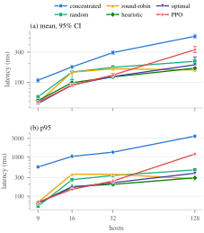

iDEFT: Intelligent Backup-Node Selection for Fault-Tolerant NF State Replication
DEFT copies a primary network function's state to a backup so it can survive
failures, but it never says how that backup is chosen. This project builds
and tests three ways to choose it, and compares them against DEFT's fixed hand-picked
mapping across four network sizes, from 9 to 128 hosts.
Every major NF state-replication system we looked at (OpenNF, Split/Merge,
StatelessNF, S6, Pico Replication, FTMB, REINFORCE, and DEFT itself) copies state to a
backup without saying how that backup is picked. In DEFT's own code, the fixed mapping
puts 3 of 5 primaries on a single backup host, with no awareness of load or health.
This project treats the choice of backup as a real decision, and measures whether a
smarter choice helps, and when.
Puts every primary on the same backup. The worst case, at any size.
random
Picks a random valid backup for each primary, with a fixed seed.
round_robin
Goes through the backup pool in order. Spreads load, but knows nothing about host quality.
heuristic
Scores each choice on health, capacity, latency and hop-count, then lowers a host's score after it is used.
optimal
The best possible answer under a per-backup capacity limit, solved with the Hungarian algorithm.
rl
A PPO agent trained on the same score, penalised for invalid choices during training.
Headline Findings
0/80
times heuristic, optimal and RL sent a primary to a bad host, in every seed at every size
7–10×
worse average and tail latency for RL than the heuristic at 128 hosts, even after fixing its collapse (though RL's median is the best of any method)
16×
worse average latency for the naive "concentrated" choice than the heuristic at 128 hosts
≈50ms
the slowest time any method took to work out a mapping, at the largest size; every other method is under 10 ms
Core result: a simple, well-designed heuristic stays close to the
best possible answer at every size we tested. Reinforcement learning matches it up to
32 hosts, but needs non-default settings to avoid collapsing onto one host at 128
hosts. Even after that fix it still spreads load less evenly than the heuristic,
though it picks good hosts just as well. The
128-host page has the full account of what broke and what
we fixed.

Per-call latency against network size: (a) average, (b) p99, on log axes.
heuristic and optimal stay flat,
concentrated gets steadily worse, and
rl follows the smarter methods until 128 hosts.
(Figure 2 of the paper.)
Reproduce Everything
Trained RL models come with the code, and everything runs on a laptop with no root
access, no Mininet, and no SDN controller:
Every method is tested against DEFT's real, unchanged 2PC backup code
under a controlled load, not a simulation. The full method page explains why and how.